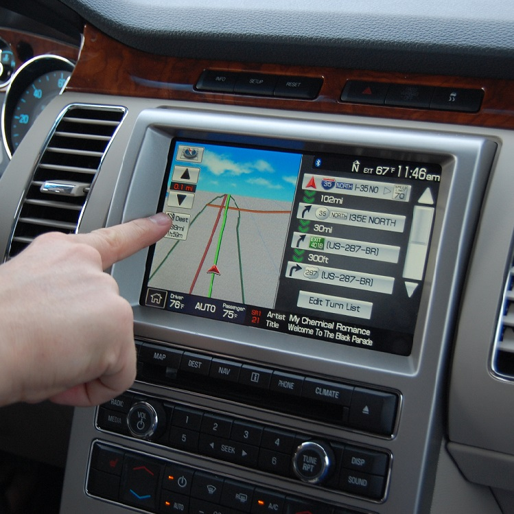
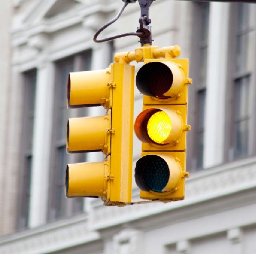

Safe-Light is a state of the art in-car program that would assist drivers to make the correct decision when approaching a changing traffic light. Many people misjudge yellow lights when approaching an intersection and Safe-Light would insure the driver has all the required information to make the correct decision.
How do we solve this?
Safe-Light would drastically decrease the amount of accidents caused by traffic lights, saving lives. With almost all accidents able to be avoided, Safe-light is the next step in car safety. Other features would include decreasing the volume when emergency vehicles are nearby, and notify the driver of any accidents in the area.
Features
Click on any tab to learn more.
Warn you when you are about to hit a yellow light
Approaching an intersection as the traffic light turns yellow can be a stressful experience.
In only a split second we expect drivers to calculate whether they should attempt to stop or continue through the intersection.
Making the wrong choice could result in an unsafely abrupt stop or driving through a red light.
Safe Light lightens the load by making this calculation for you, helping you be a better, safer driver.
Countdown until the next green light
Not a lot is more irritating when driving then waiting for a traffic light that just won’t turn green. While we can’t change when it’s your turn, we can make it a more predictable experience.
Safe Light displays a countdown until the next green light corresponding to your lane, determined by your car’s signal.
Mutes audio when an emergency vehicle is approching
Safe Light is capable of communicating with more than just traffic lights. The same communication technology we put in traffic lights can also be put in emergency vehicles.
This allows Safe Light to mute a car's audio when a police car, firetruck or ambulance is approaching.
Our product improves safety even for those who aren’t on the road by helping first responders get where they need to be faster.
How does it work?

There are two components to Safe Light. The first part is within the car and can be accessed through the navigation system. The main function of this component is to receive information from the network and relay it to the driver through various methods such as visual and audio signals.

The second component is a network based on the latest cellular network technology which connects all the traffic lights and delivers information to the navigation system in the car. When a car is approaching a yellow light, the duration of the light is sent to the navigation system which is then relayed to the driver. If the car is stopped at a red light, the remaining duration is also relayed to driver. In the event of a nearby emergency vehicle, the driver will receive the location of the vehicle so that he/she can take the proper measures if necessary.
The Market
Autonomous driving has not fully entered the market yet, therefore creating an opportunity for our project to succeed. There is around a 10-15 year gap before autonomous driving will be availible for the public, and even then might not be affordable or practical for the average consumer. Moreover, with this being said, SafeLight, would be an essential feature for keeping the average driver safe from car crashes at intersections.
Our Possible Clients
The premise of our project is to create a business to business product that would create a safe and beneficial feature to most modern cars on the road. Most car companies, including but not limited to Toyota, Honda, Mercedes and BMW have displays in their cars/dashboards to assist drivers while driving. Moreover, this feature would not be hard to implement in an already solid state of technology inbedded in many cars. In addition, this feature could possibly increase the value of cars because of the decrease of occuring accidents. In short, our clients can be a variety of car companies while the world waits for the creation of autonomous driving that is affordable and accessible for all.